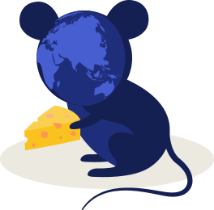

When the cat's away

When the cat's away

The invasion of Crimea and eastern Ukraine
In 2013, Ukraine’s pro-Russian government suspended the signing of an association agreement with the European Union, sparking mass protests by the pro-European Maidan movement, the Ukrainian revolution and the overthrow of Ukraine’s pro-Russian government. In 2014, Russia took advantage of the internal conflict to impose itself in this part of the former Soviet Union, calculating that the US would not be able to deter it. First, it annexed Crimea, a peninsula in the Black Sea. Protestors in Crimea, backed by disguised Russian soldiers, rejected the new Ukrainian government, seized the local parliament building and organised a referendum, in which, Russia claimed, Crimeans voted overwhelmingly to join Russia. Soon after pro-Russian rebels seized territory in eastern Ukraine with the help of the Russian army, which led to brutal fighting and a humanitarian crisis.